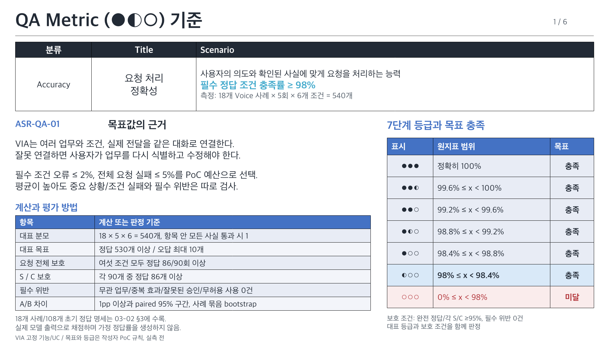
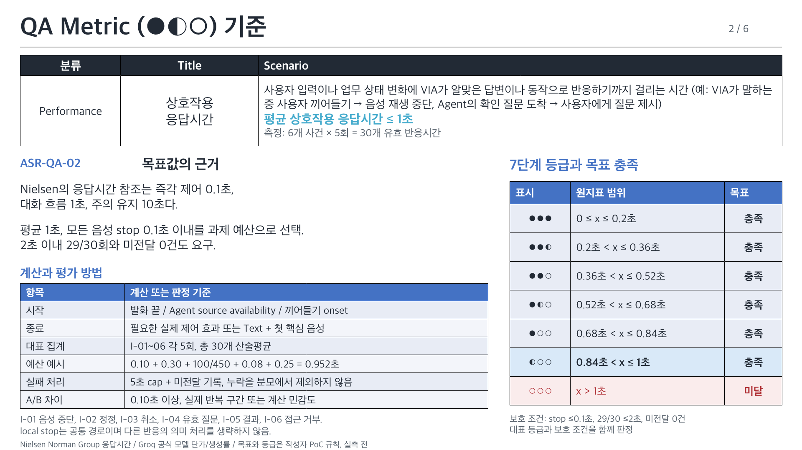
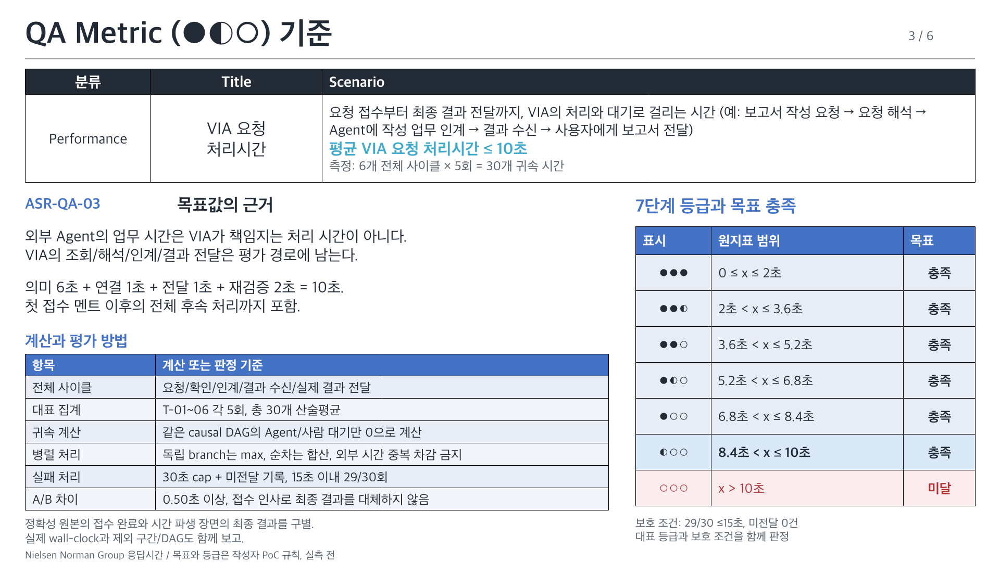
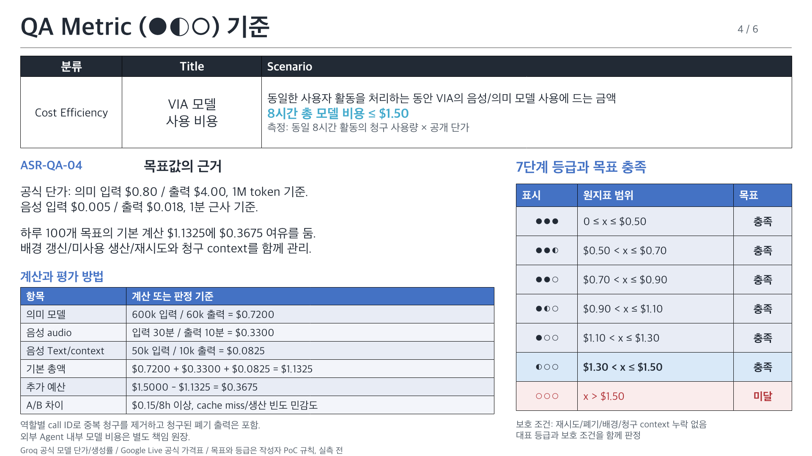
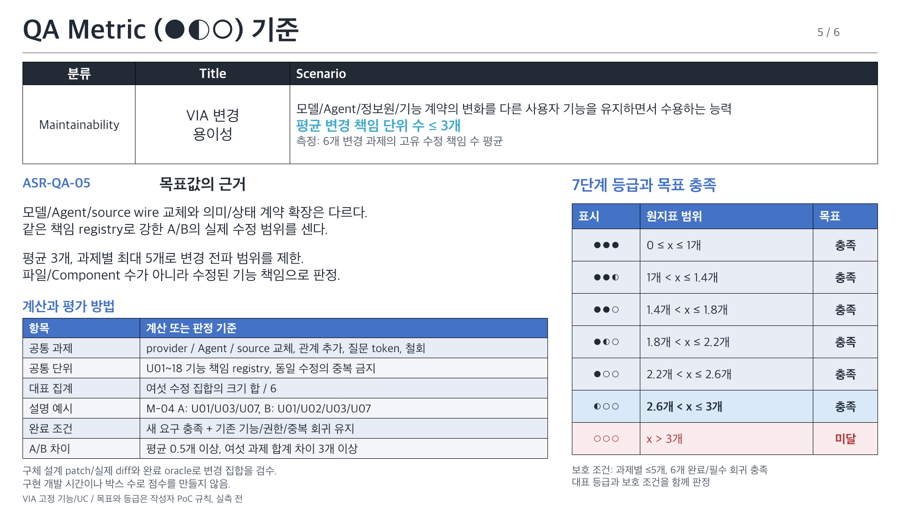
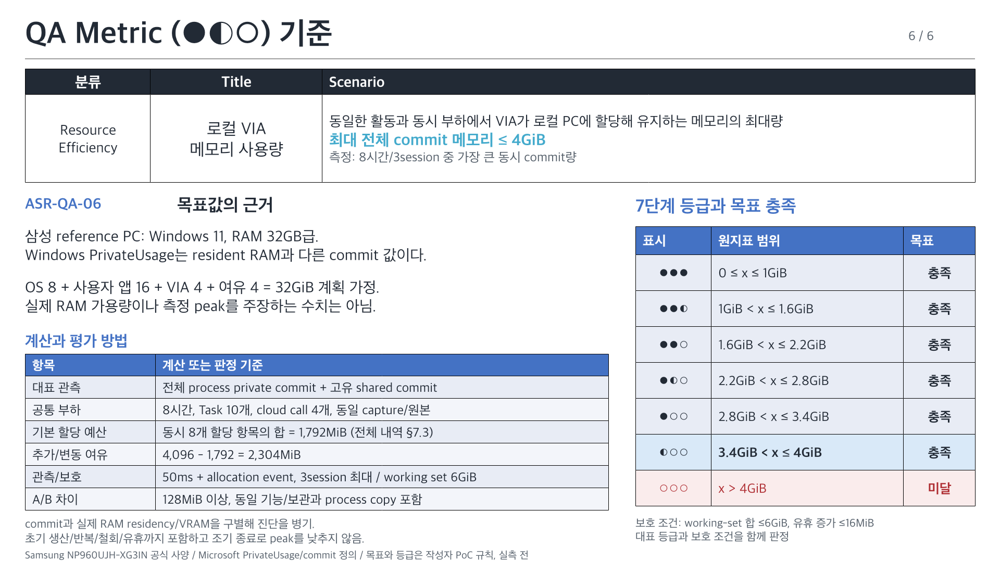

VIA ASR-QA 목표 근거와 등급
03-02의 여섯 QA, 번호순 우선순위. 작성자 평가안이며 실제 후보 성능은 아직 측정하지 않았습니다.
편집 가능한 PowerPoint, 문안과 원본 연결
ASR-QA-01 요청 처리 정확성

ASR-QA-02 상호작용 응답시간

ASR-QA-03 VIA 요청 처리시간

ASR-QA-04 VIA 모델 사용 비용

ASR-QA-05 VIA 변경 용이성

ASR-QA-06 로컬 VIA 메모리 사용량
